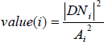
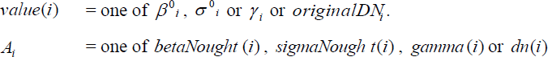
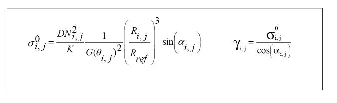
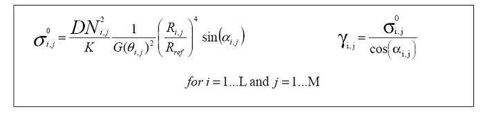
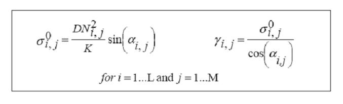
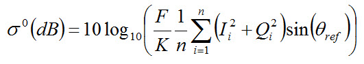
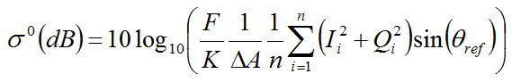
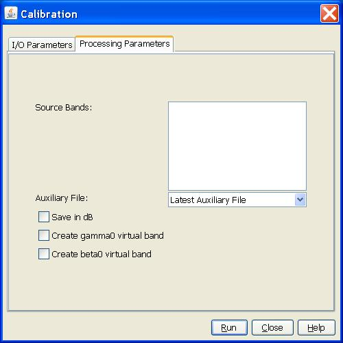

| Calibration | |
The objective of SAR calibration is to provide imagery in which the pixel values can be directly related to the radar backscatter of the scene. Though uncalibrated SAR imagery is sufficient for qualitative use, calibrated SAR images are essential to quantitative use of SAR data.
Typical SAR data processing, which produces level 1 images, does not include radiometric corrections and significant radiometric bias remains. Therefore, it is necessary to apply the radiometric correction to SAR images so that the pixel values of the SAR images truly represent the radar backscatter of the reflecting surface. The radiometric correction is also necessary for the comparison of SAR images acquired with different sensors, or acquired from the same sensor but at different times, in different modes, or processed by different processors.
This Operator performs different calibrations for ASAR, ERS, ALOS and Radarsat-2 products deriving the sigma nought images. Optionally gamma nought and beta nought images can also be created.
Sentinel-1 (IW, EW, SM SLC and GRD) are fully supported
ASAR (IMS, IMP, IMM, APP, APS, APM, WSM) are fully supported
ERS 1 & 2 products (SLC, IMP) are fully supported
Third party SAR missions may not be fully supported for all modes.
For converting digital pixel values to radiometrically calibrated backscatter, all the required information can be found in the product. A calibration vector is included as an annotation in the product allowing simple conversion of image intensity values into sigma or gamma nought values [6].
The objective of SAR calibration is to provide imagery in which the pixel values can be directly related to the radar backscatter of the scene. To do this, the application output scaling applied by the processor must be undone and the desired scaling must be applied. Level-1 products provide four calibration Look Up Tables (LUTs) to produce β0i, σ0i and γi or to return to the Digital Number (DN). The LUTs apply a range-dependent gain including the absolute calibration constant. For GRD products, a constant offset is also applied.
The radiometric calibration is applied by the following equation:

where, depending on the selected LUT,

Bi-linear interpolation is used for any pixels that fall between points in the LUT.
For ground range detected products, the following corrections are applied:
incidence angle
absolute calibration constant
In the event that the antenna pattern used to process an ASAR product is superseded, the operator removes the original antenna pattern, and apply a new, updated one. The old antenna pattern gain data is obtained from the external XCA file specified in the metadata of the source product. The new antenna pattern gain data and the calibration constant are obtained from the user specified XCA file. For XCA file selection, user has the following options:
If "product auxiliary file" is selected, then no retro-calibration is performed, i.e. no antenna pattern gain is removed or applied. By default the latest XCA file available for the product is used.
For slant range complex products, the following corrections are applied:
incidence angle
absolute calibration constant
range spreading loss
antenna pattern gain
The antenna pattern gain data and the calibration constant are obtained from the user specified XCA file. For XCA file selection, user has the following options:
By default, the latest auxiliary file available for the product will be used for the calibration.
The default output of calibration is sigma0 image. User can also select gamma0 and beta0 images outputting as virtual bands in the target product.
In the following, the calibration process is related to the different type of ASAR products.
The sigma nought image can be derived from ESA’s ASAR level 1 IMS products as the follows (adapted from [1]):

The methodology to derive the sigma nought is the same of the IMS data but an additional factor (Ri,j / Rref) must be taken into account:

In contrast to IMS and APS products, ASAR ground range imageries (IMP, APP, IMM, APM, WSM) have all been applied antenna gain pattern compensation (based on ellipsoid approximations) and range spreading loss correction during the formation of the images. Therefore the antenna pattern correction applied to the image must be removed when updated external XCA file is available for the product.
The sigma nought image can be derived from ESA’s ASAR level 1 IMP, APP, IMM, APM, WSM products as the follows (adapted from [1]):

The operator is able to calibrate ERS VMP, ERS PGS CEOS and ERS PGS ENVISAT ESA standard products generated by different ESA Processing and Archiving Facilities, such as the German PAF (D-PAF), the Italian PAF (I-PAF) and the United-Kingdom PAF (UK-PAF), and at the acquisitions stations such as PDHS-K (Kiruna) and PDHS-E (Esrin).
For ERS-1 ground range product, the following corrections are applied:
incidence angle
calibration constant
replica pulse power variations
analogue to digital converter non-linearity
For ERS-1 slant range product, the following corrections are applied:
incidence angle
calibration constant
analogue to digital converter non-linearity
antenna elevation pattern
range spreading loss
For ERS-2 ground range product, the following corrections are applied:
incidence angle
calibration constant
analogue to digital converter non-linearity
For ERS-2 slant range product, the following corrections are applied:
incidence angle
calibration constant
analogue to digital converter non-linearity
antenna elevation pattern
range spreading loss
The operator performs absolute radiometric calibration for ALOS PALSAR level 1.1 or 1.5 products. For ALOS PALSAR L1.1 and L1.5 products, the following corrections have already been applied:
range spreading loss correction
antenna pattern gain correction
incidence angle correction
Therefore the operator applies only the absolute calibration constant correction to the products.
For detailed ALOS PALSAR product calibration algorithm, reader is referred to [3].
The operator performs absolute radiometric calibration for Radarsat 2 products by applying the sigma0, beta0 and gamma0 look up tables provided in the product.
For detailed Radarsat-2 product calibration algorithm, reader is referred to [4].
The operator performs absolute radiometric calibration for TerraSAR-X products. The following corrections have been applied:
calibration constant correction
incidence angle correction
Noise Equivalent Beta Naught (NEBN) correction
The "noiseCorrectedFlag" in the metadata is checked before NEBN correction is applied. The operator currently does not support ScanSAR calibration when noiseCorrectedFlag is false. For detailed TerraSAR-X product calibration algorithm, reader is referred to [5].
The operator performs absolute radiometric calibration for Cosmo-SkyMed products by applying few product factor corrections.
For detailed Cosmo-SkyMed product calibration algorithm, reader is referred to [7].
Currently only High Resolution and Standard Modes are supported by the operator. Wide Swath Modes are not supported.
High Resolution modes include the following imaging modes:
Standard Modes include the following imaging modes:
For High Resolution modes, the following radiometric calibration is applied:

where F is the rescaling factor and K is the calibration constant in HDF attributes, and θref is the reference incidence angle.
For Standard Modes, the following equation is applied:

where ΔA is the pixel area given by (azimuth spacing x range spacing).
The parameters used by the operator are as follows:

GPT operator: Calibration. Generated from the operator source; parameter names are those used in GPT and graph XML.
| Parameter | Type | Default | Allowed values | Unit | Description |
|---|---|---|---|---|---|
sourceBands | String[] | The list of source bands. | |||
auxFile | String | Latest Auxiliary File | Latest Auxiliary File, Product Auxiliary File, External Auxiliary File | The auxiliary file | |
externalAuxFile | File | The antenna elevation pattern gain auxiliary data file. | |||
outputImageInComplex | Boolean | false | Output image in complex | ||
outputImageScaleInDb | Boolean | false | Output image scale | ||
createGammaBand | Boolean | false | Create gamma0 virtual band | ||
createBetaBand | Boolean | false | Create beta0 virtual band | ||
selectedPolarisations | String[] | The list of polarisations | |||
outputSigmaBand | Boolean | true | Output sigma0 band | ||
outputGammaBand | Boolean | false | Output gamma0 band | ||
outputBetaBand | Boolean | false | Output beta0 band |